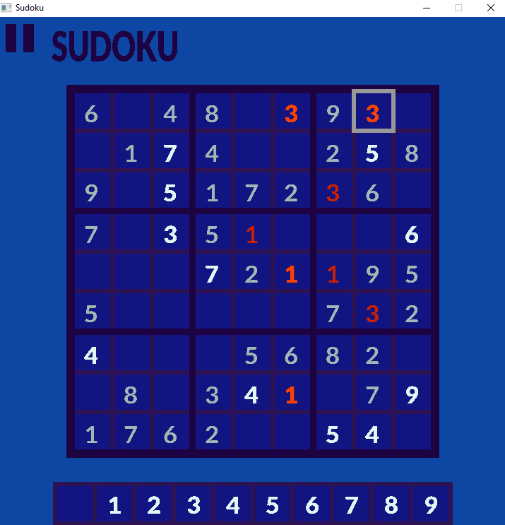

This project allows users to play Sudoku at various difficulty levels. The application generates random boards using a simple backtracking algorithm and is built using Simple DirectMedia Layer 2 (SDL2) for the user interface.
The Sudoku game with SDL2 offers basic functionalities for gameplay. Users begin at the Main Menu, which includes options to 'Play' or 'Quit'. Upon selecting 'Play', users choose a difficulty level from easy, medium, or hard. The board generation time varies based on the selected difficulty, computer capabilities, and the randomness of the shuffled board. Typically, easy and medium difficulty boards generate almost instantly, while hard boards may take a few extra seconds to complete.
This project is structured to develop a Sudoku game application using C++ and SDL (Simple DirectMedia Layer) for graphics rendering. Key components include:
Main Modules:
Game Logic:
Graphics and Rendering:
Concurrency:
Gameplay Flow:
The Sudoku class sets up the application and orchestrates the different parts of the game. It manages the main game loop, which includes event handling, screen refreshing, and framerate stabilization.
Key functionalities include:
The class ensures smooth transitions between different game states and maintains consistent performance, providing a cohesive and responsive user experience.
The Painter class is responsible for setting up and managing the window, renderer, fonts, and textures for the game using SDL. It handles the initialization of the graphical environment and provides methods to render different game states.
Key functionalities include:
The class ensures efficient management of SDL resources using smart pointers and proper cleanup in the destructor. It provides a foundation for rendering the game's visual components and handling graphical updates.
The Game class represents the main game logic and rendering for a board game using SDL for graphics. It extends the Paintable class and manages various elements such as number textures, fonts, and the game board itself.
Key functionalities include:
The class is constructed with SDL renderer and font pointers, ensuring it can draw and manage game elements efficiently.
The MainMenu class manages the main menu of the Sudoku game. It inherits from the Paintable class and uses SDL2 for rendering and event handling.
Key Functionalities:
This class provides the functionality to navigate the main menu, select difficulty levels, and start the game.
The Loading class handles the loading screen of the Sudoku game, displaying a loading message and an indicator while the game board is being generated. It inherits from the Paintable class and utilizes SDL2 for rendering and text generation.
Key Functionalities:
Initialization and Cleanup:
Text Loading:
Loading Status Check:
The Board class manages a Sudoku game board, handling puzzle generation, solution validation, and user interactions. Key functionalities include:
This class forms the backbone of Sudoku gameplay mechanics, ensuring puzzle generation, solving, and validation align with the game's rules and user interactions.

Application Capabilities Overview This Sudoku game application developed in C++ and SDL offers the following capabilities:
Interactive Gameplay: Users can solve Sudoku puzzles through intuitive mouse and keyboard interactions.
Multiple Difficulty Levels: Supports easy, medium, and hard difficulty levels with dynamically generated puzzles.
Real-time Feedback: Provides immediate feedback on user-entered numbers, highlighting errors in red.
Visual Clarity: Utilizes SDL for clear, visually appealing graphics and text rendering on the game board.
Loading Screen: Displays a loading screen with animated indicators while puzzles are generated in the background.
Concurrency: Implements multi-threading to ensure responsive gameplay and smooth transitions between screens.
Validation: Verifies the correctness of user solutions and alerts users to incorrect placements.
User-Friendly Interface: Features an intuitive interface with clear instructions and visual cues to aid gameplay.
Customizable Settings: Allows users to adjust settings such as sound, colors, and display preferences.
This application aims to provide an engaging Sudoku-solving experience with robust functionalities and a polished user interface, enhancing user satisfaction and enjoyment.
The main challenge was developing the board generation process for Sudoku. The primary strategy involved initially creating a full board randomly and then progressively removing numbers one by one, ensuring each step maintained a unique solution. However, the basic backtracking algorithm I implemented proved insufficient for generating very difficult boards with fewer than 30 numbers remaining.
This method is highly randomized due to the random order of number removal. Consequently, while some hard boards can be generated in seconds, others may take significantly longer. To address this, I explored a more effective algorithm for solving Sudoku boards called Algorithm X, developed by Donald Knuth. This algorithm doesn't directly solve Sudoku but rather finds solutions to the exact cover problem. Sudoku puzzles can be translated into this problem format, requiring a "dancing links" matrix with 324 columns and 729 rows of boolean values interconnected in specific patterns. However, implementing this method posed challenges, especially regarding debugging, due to its complexity.
To mitigate long board generation times, I implemented a secondary std::thread to handle puzzle generation separately, preventing application freezing. This thread continually updates the best-found board whenever a better solution is discovered. If the solution meets certain criteria, the main thread terminates the board generation process. Terminating this recursive function smoothly is tricky but currently functions without disrupting the player experience.
Overall, while developing robust board generation remains challenging, the current approach effectively balances speed and complexity to provide a satisfactory Sudoku-solving experience.
Despite initial expectations, I am pleased with the outcome of this project. Along the way, I gained valuable insights into SDL2, C++, and the intricacies of Sudoku itself. A notable learning experience was integrating smart pointers into my project for the first time. I discovered their efficiency in memory management compared to traditional 'new' and 'delete' methods, offering simpler solutions and alleviating concerns about memory release. This approach also seamlessly integrates with SDL2, where dynamic memory allocation plays a crucial role in handling various aspects of the application.